第8章 记忆管理 Memory Management
在有限上下文之外，用短窗、摘要与检索分层管理状态，让智能体跨轮次、跨会话记住该记的事。
一句话定义：在模型无状态、上下文窗口有限的约束下，通过分层的写入、压缩与检索机制，让智能体在对话轮次之间和会话之间维持连续的知识与个性。 解决什么问题：对话超长后早期信息丢失、用户每会话都要重述偏好、长任务中途"失忆"、重复注入全部历史导致成本失控 ｜ 适用场景：长期客服、个人助理、编程助手、陪伴类应用以及任何需要跨会话连续性的智能体 ｜ 核心机制：分层存储（工作窗/摘要/长期库）+ 写入策略（什么值得记）+ 检索注入（何时取回什么）+ 遗忘与过期 ｜ 代价：检索引入噪声与延迟，记忆错误会被放大，隐私与多租户隔离成为硬责任。
8.1 模式概述
8.1.1 问题背景：为什么需要这个模式
LLM 本身没有状态：每次调用都是独立的，所谓"对话历史"只是应用层每次重新拼进上下文的文本。这带来三个工程事实。其一，窗口有限——即使长上下文模型，把几个月的对话全部带上既不可行也不经济，而且研究表明超长上下文中模型对中段信息的利用率会下降。其二，上下文即成本——每轮都携带全部历史的做法让 token 费用随对话长度平方级增长。其三，跨会话天然断裂——新会话开始时模型对用户一无所知，除非应用层把历史知识找回来注入。
因此"记忆"在智能体语境下是一门工程学科，而不是模型能力：决定哪些信息值得保存、以什么形式保存、何时以多少成本取回。认知科学早就研究过同类问题——人类记忆同样面临容量与取回的矛盾，并用分层存储解决它。本章的许多设计可以直接从认知科学的分层模型获得直觉，但要清楚：那是隐喻与结构启发，不是机制复刻（8.5.5 会专门讨论这条边界）。
8.1.2 核心机制：它如何工作
工程上最有效的骨架是三层结构。工作层（短窗）：保留最近若干轮原始对话，信息零损失，随窗口滑动被逐出。压缩层（摘要）：被逐出的对话不直接丢弃，而是定期合并进一段不断更新的摘要，保留事实、决定与未完成事项，牺牲细节换长度。长期层（记忆库）：从对话中提取"值得跨会话记住"的离散事实（用户偏好、约束、身份信息），以条目形式存入可检索的库——通常是向量库，也可以是带时间属性的知识图谱。运行时按"长期检索命中 → 摘要 → 近期原文"的顺序拼装记忆上下文注入提示。
围绕这三层还有两套策略。写入策略回答"什么值得记"：用户显式说"记住"的最优先；系统能识别的稳定事实（偏好、约束、事实性陈述）次之；一次性闲聊不记。读取策略回答"取回什么"：用当前话题对长期层做相似度检索，过相关性阈值才注入，宁缺毋滥——一条不相关的"记忆"比没有记忆更伤输出质量。

8.1.3 与相邻模式的关系与组合
记忆管理与检索增强生成共享"检索后注入"的机制，区别在数据源：RAG 检索外部静态语料，记忆检索的是智能体自身经历中沉淀的条目。记忆是反思模式的落点——反思产生的洞见若不写入记忆，反思就只是一次性的。多智能体协作中的黑板/共享状态本质上是"会话内的共享记忆"。工具使用模式则常把记忆库封装为工具（remember/recall），让模型自己决定存取时机。在实际系统中，记忆管理几乎总是与这几者组合出现：一个长期运行的助手 = 分层记忆 + 会话末反思写入 + 记忆读写以工具形式暴露。

8.2 源起：它从哪里来
记忆管理源自认知科学与工程痛点的交汇。1968 年 Atkinson 与 Shiffrin 提出多重存储模型，把记忆分为感觉、短时、长时三级——预示了“窗口—摘要—长期库”的分层；1972 年 Tulving 区分情景记忆与语义记忆，对应“对话原文”与“事实条目”两类存储。工程线从“窗口不够用”出发：2023 年 4 月的 Generative Agents 做出记忆流+检索打分+反思固化的原型；同年 10 月 Berkeley 的 MemGPT 以虚拟内存隐喻让模型自主分页；此后 HippoRAG 引入图谱检索，Mem0 做成记忆服务，Zep 用时序图谱维护演化关系，Google ADK 又把它推向托管服务——记忆从应用逻辑变成平台基础设施。
| 年份 | 事件 | 提出者/机构 | 出处 |
|---|---|---|---|
| 1968 | 多重存储模型：感觉/短时/长时三级记忆 | Atkinson、Shiffrin（斯坦福） | The Psychology of Learning and Motivation 第 2 卷 |
| 2023.4 | Generative Agents：记忆流 + 三因子检索 + 反思固化 | Park 等（斯坦福/Google） | arXiv:2304.03442 |
| 2023.10 | MemGPT：虚拟上下文与自主分页 | Packer 等（UC Berkeley） | arXiv:2310.08560 |
| 2025.4 | Mem0 论文：多级记忆即服务与生产化 | Mem0 团队 | arXiv:2504.19413 |
| 2025.4 | Google ADK：Session/State/Memory 三层模型 | 官方文档 |
8.3 发挥的作用：为什么重要
记忆是把"聊天机器人"变成"助理"的分界线。第一，连续性：用户不用再自我介绍——偏好、约束、历史决定都还在，这在客服（用户档案）、编程助手（项目约定）与陪伴类产品（关系延续）里直接决定体验下限。第二，长任务的连贯性：多日推进的复杂任务中，记忆让智能体记得自己做过什么决定、为什么放弃某方案，避免循环重复劳动。第三，成本结构改善：有了摘要与检索，应用不再需要每轮携带全部历史，token 成本从平方级回到近似常数加检索开销。第四，个性化与复利：用户级记忆随使用积累，产品对老用户越来越"懂"，这是记忆带来的产品护城河。第五，它是其他模式的前提——反思需要落点，多智能体需要共享黑板，学习进化（第 9 章）需要经验库，全都依赖本章的存储与检索机制。
8.4 实际应用与案例
客服长期用户档案。 每次会话结束后提取用户级事实（套餐、设备型号、历史工单主题）写入用户级记忆；下次用户开口，先检索再应答。关键设计点：事实条目必须带时间戳并与用户 ID 隔离，旧套餐信息要在新信息到达时显式覆盖而不是并存。
编程助手的项目记忆。 跨会话记住项目的命名约定、目录结构、技术选型与"为什么不用某方案"的决策理由。关键设计点：区分"代码里可查到的"（不记，用检索代码库代替）与"代码里查不到的"（约定、坑、决策，记）。
个人助理的偏好管理。 记饮食禁忌、日程习惯、沟通偏好。关键设计点：显式记忆（用户说"记住我对海鲜过敏"）与自动抽取分开存储、分开信任等级，展示记忆清单让用户可查可删。
教育 Agent 的学习者画像。 记录已掌握知识点、常错类型、偏好的讲解风格，据此调整后续内容难度。关键设计点：画像条目要随新表现滚动更新（掌握度是会变的），过期判定比通用记忆更激进。
研究智能体的实验记录。 记"试过什么、参数多少、为什么失败"，避免同一弯路走两遍。关键设计点：失败记录与成功记录同样有价值，且必须带完整参数上下文，否则不可复现。
陪伴类应用的连续性。 记共同经历（聊过的话题、纪念日），维持"关系感"。关键设计点：情感类记忆的错误（张冠李戴）对信任的伤害极大，检索阈值应设得比工具类记忆更高。
真实世界实例
OpenAI ChatGPT 的 Memory。 2024 年 2 月 13 日官方公告开始测试记忆功能，2024 年 9 月 5 日推向 Free/Plus/Team/Enterprise 全量用户；2025 年 4 月 10 日升级为双通道——用户显式要求"记住"的保存记忆，加上从历史对话提炼洞察的聊天历史参考，用户可查看、逐条删除或整体关闭。这正是本章"写入策略分级 + 用户可控"的产品化样本。来源：OpenAI 官方公告与帮助中心。
Anthropic Claude Projects。 2024 年 6 月 25 日官方发布（Pro/Team）：每个项目捆绑独立知识库（约 200K token 上下文，官方称相当于一本 500 页的书）与项目级自定义指令，项目内所有对话共享同一份项目知识——把"记忆"放在用户可管理的项目容器里，而非黑盒。来源：Anthropic 官方发布页。
Mem0 生产采用。 记忆即服务基础设施，官方披露数千团队（含财富 500 强）在生产使用，被 AWS 选为新 Agent SDK 的记忆供应商，并与 CrewAI、Flowise、Langflow 原生集成；其 API 调用量从 2025 年 Q1 的 3500 万次增长到 Q3 的 1.86 亿次。来源：mem0.ai 与官方融资公告。
8.5 深度讲解
8.5.1 四条技术线的取舍
窗口截断：直接保留最近 N 轮、丢弃更早内容。实现最简单、无额外调用、信息新鲜度最高；但被逐出的信息永久丢失，"重要事实恰好在第 3 轮说过"这类情形无解。适合任务型短对话：一旦对话有跨长时段的生命周期，截断必须与其他技术线组合。
摘要压缩：把逐出窗口的内容合并进滚动摘要。这是当前编码助手等长程 Agent 的主流做法——把旧上下文压缩成一段结构化摘要继续工作。优点是保留"叙事骨架"，长度可控；缺点有三：摘要有损且偏近期（早期细节最先蒸发）；递归摘要会产生"摘要的摘要"的漂移，错误结论一旦进入摘要便会被反复复述而显得可信；摘要把不同事实揉成连续文本，难以单独更新某一条。工程上缓解的办法是摘要只承担"叙事"，离散事实另走长期层。
向量检索：把离散记忆条目向量化，按当前话题取 top-k 注入。可扩展性好、支持海量条目，是长期层的主流实现。弱点在于相似度不等于相关性：语义相近但时过境迁的条目（去年的旧地址）会高置信度命中；嵌入模型的召回质量问题（换说法就搜不到）也真实存在。必须配套：元数据过滤（用户、时间、来源）、相关性阈值、必要时加一层重排。
结构化图谱：把记忆组织为实体-关系图并带时间属性（Graphiti 的做法：区分事件发生时间与知识入库时间），支持"某用户在某时期的关系/状态"这类查询，矛盾处理（新事实覆盖旧事实但保留历史）也更干净。代价是抽取与维护成本高：每条记忆要过一次结构化抽取，schema 要随业务演化，实体对齐（"小林"与"林工"）是脏活。适合实体关系复杂、时间演变重要的场景（组织知识、客户关系管理），简单助手场景收益常不抵成本。
| 技术线 | 信息保真 | 成本 | 强项 | 主要失效 |
|---|---|---|---|---|
| 窗口截断 | 近期无损 | 最低 | 实现简单、零延迟 | 早期信息永久丢失 |
| 摘要压缩 | 骨架有损 | 低 | 保留叙事、长度可控 | 递归漂移、难单条更新 |
| 向量检索 | 条目无损 | 中 | 海量可扩展 | 相似≠相关、召回不稳 |
| 结构化图谱 | 结构化无损 | 高 | 时间演化、矛盾处理 | 抽取/对齐成本高 |
实践中四条线是叠加而非互斥：短窗 + 摘要 + 向量库是性价比最高的默认组合（见 8.6.1 式的实现），图谱在实体关系成为主要查询需求时再引入。
这笔账可以算成具体数字。成本曲线：全历史注入的输入 token 随轮次累加——20 轮对话、每轮平均 1,000 token，末轮输入约 20,000 token，全程累计约 210,000 token；检索注入则是“常数 + top-k”的近似平线，同规模约 16,000 token，相差一个数量级。按 gpt-4o-mini 官方定价每百万输入 token 0.15 美元（OpenAI 定价页）折算，单会话约 3.2 美分对 0.24 美分，乘以每月百万级会话就是每月数千美元的差价——这也是 Mem0 团队把“相对全上下文 p95 延迟降 91%、token 节省超 90%”作为核心卖点的原因（arXiv:2504.19413），该论文同时报告在 LOCOMO 基准上比 OpenAI 官方记忆方案的准确率相对提升 26%。利用率曲线更反直觉：Liu 等人的《Lost in the Middle》（arXiv:2307.03172，TACL）在 20 文档多文档问答上测得，GPT-3.5-Turbo 对关键文档位于开头时准确率 75.8%，位于中段时跌到 53.8%——掉了 22 个百分点，甚至低于完全不给文档的闭卷基线 56.1%：中段信息不只是被忽略，还会把模型带偏。塞得下不等于用得上——把窗口塞满全部历史是成本与质量的双输方案，分层记忆不是优化项，是正确性项。
8.5.2 记忆写入策略：什么值得记
写入策略决定记忆库的长期质量，比检索算法更能决定成败。优先级从高到低：用户显式指令（"记住……"）必记，且标注来源为用户，检索时享受最高信任；稳定事实（身份、偏好、约束、长期项目语境）由抽取器识别后记入，条目要写成独立、自包含、可单独过期的短句（"用户主数据库为 PostgreSQL 15"），而不是带上下文的长段；一次性的过程性内容（寒暄、临时计算）不记。Generative Agents 的三因子（新近性、重要性、相关性）同样适用于写入端的 importance 打分：重要性评分可以由模型在抽取时一并给出，低分条目直接丢弃，控制库膨胀。
两个工程要点。一是写入时机：即时写入（对话中识别即入库）响应快但打断主流程、错误率高；会话末批量写入质量更高，代价是会话中途崩溃会丢记忆。折中做法是重要意图即时记、其余批量。二是去重与合并：同主题新条目到达时应更新或覆盖旧条目并保留时间线，否则库会被同一事实的十种说法填满，检索噪声随之上升。
8.5.3 遗忘与过期
记忆系统不设计遗忘，最终会被自己的历史拖垮。过期有三类机制：TTL 硬过期——条目带有效期（配置类记忆半年、会话摘要一个月），过期物理删除，这也是合规（用户删除权）的基本盘；时间衰减——检索得分乘以时间衰减因子，旧记忆不删除但越来越难被召回，模拟自然遗忘；矛盾覆盖——新事实与旧事实冲突时标记旧条目为"已失效"并保留历史（图谱路线的自然能力），向量库路线则至少要做到新条目打高置信、旧条目降权。实践中最常见的错误是没有遗忘机制：库越长越大，检索精度越来越差，最终大家得出"记忆没用"的错误结论——不是没用，是没打扫。
8.5.4 隐私与安全
记忆把对话从"用完即弃"变成"长期持有"，责任随之升级。四条底线：跨用户隔离——记忆必须按用户硬隔离，检索入口在 SQL/过滤器层强制用户 ID 条件，绝不能依赖提示词自我约束；PII 控制——入库存前做敏感信息识别，要么脱敏要么加密存储，明文向量库是常见事故源；记忆投毒——提示注入可以让智能体"记住"一条恶意指令，在下个会话被检索注入后持续生效，这是记忆区别于普通 RAG 的独特攻击面，对策是对入库内容做指令性语句过滤与来源标记（模型产出的"记忆"信任等级低于用户显式陈述）；用户可控——提供记忆清单的查看、修正与一键删除，这既是产品信任问题，也是多数司法辖区下删除权的合规要求。
8.5.5 认知科学对照与边界
多重存储模型与情景/语义之分给了本章极好的设计直觉：短窗≈短时记忆，摘要≈经复述固化的内容，长期库≈长时记忆，条目式事实≈语义记忆，原文对话≈情景记忆。但边界必须讲清楚：生物记忆的固化是神经机制，而机器记忆的固化只是一次 LLM 抽取调用；人不会把幻觉记成事实（大体上），而智能体会——抽取器抽错了，错误就获得与真记忆同等的地位。因此工程上的记忆系统比认知模型更需要"元信息"：来源、置信度、时间、信任等级。凡是不带元信息的记忆条目，都无法参与遗忘、冲突解决与信任分级，等于给自己埋雷。
8.5.6 何时不要用
一次性任务型应用（翻译、单轮问答、代码片段生成）不需要记忆——加记忆只增加成本与出错面。数据高度敏感且用户明确不希望留存的应用，无记忆反而是卖点。另外，如果业务本身已有权威的用户画像库（CRM），先检索 CRM 再考虑自建记忆：自建记忆层的价值在于沉淀"对话中产生、库里没有"的知识，重复建设只会造成两套真相。
8.5.7 怎么用：运用判断
适用信号：①同一用户或项目会跨会话回来（客服、助理、编程助手）；②对话长度开始让早期信息失效或成本曲线抬头（约十几轮以上）；③业务能写出“什么值得记”的稳定标准（偏好、约束、决策）。三条都不满足时，短窗加摘要即可，不要建长期库。
边界条件：记忆条目到几万条以上、或单用户高频写入时，朴素向量库会出现相似度漂移与召回不稳，需要元数据过滤加重排兜底；抽取器错误率超过约一成时，错误条目会侵蚀整库信任——先治理写入端，再谈检索调优。
| 维度 | 全历史注入 | 检索注入（本章） | 外部权威库（CRM/RAG） |
|---|---|---|---|
| 成本 | 随轮次近似平方增长 | 近似常数 + 检索开销 | 复用现成系统，自建成本为零 |
| 质量 | 中段信息利用率骤降 | 相关才注入，阈值兜底 | 权威事实的首选来源 |
| 适用 | 十轮内的短会话 | 跨会话、对话中沉淀的知识 | 库里已有的事实不重复建 |
落地三步：①先用“短窗 + 滚动摘要”跑两周，收集“它忘了什么”的真实案例，按案例定写入标准；②加长期库与相关性阈值（0.35 起调），条目强制带时间戳与来源；③每月用“该记/不该记/该召回/不该召回”四类小评测集做回归，遗忘与隔离机制上线前必须有评测兜底。
8.6 工程落地：核心源码与讲解
8.6.1 框架无关核心源码（按序拼接即完整可运行）
以下四个片段按原文件顺序实现“短窗 + 滚动摘要 + 向量长期库”三层记忆：写入策略（显式优先、自动抽取限流）、相关性阈值检索、向量化失败的降级路径。按序拼接（片段 1→4）即完整可运行程序。
片段 1／4：基座与统一接口。
"""第 8 章 核心源码：短窗 + 滚动摘要 + 向量长期库的三层记忆（按序拼接 4 片段可运行）。"""
import json, os, time
from collections import deque
from dataclasses import dataclass
from openai import OpenAI
client = OpenAI(base_url=os.environ.get("AGENT_LLM_BASE_URL", "https://api.openai.com/v1"),
api_key=os.environ["AGENT_LLM_API_KEY"])
MODEL = os.environ.get("AGENT_LLM_MODEL", "gpt-4o-mini")
EMBED_MODEL = os.environ.get("AGENT_LLM_EMBED_MODEL", "text-embedding-3-small")
WINDOW_SIZE = 6 # 短窗保留最近 6 轮
RELEVANCE_MIN = 0.35 # 长期记忆召回阈值：宁缺毋滥
def llm(prompt: str, system: str = "", temperature: float = 0.3) -> str:
"""调用 OpenAI 兼容接口；失败只抛异常，由调用方降级。"""
msgs = ([{"role": "system", "content": system}] if system else [])
msgs.append({"role": "user", "content": prompt})
resp = client.chat.completions.create(
model=MODEL, messages=msgs, temperature=temperature)
return resp.choices[0].message.content or ""
▸ 代码怎么读：基座只立一条规矩——失败不吞。llm() 的任何异常都向上抛，降级决策权在调用方。RELEVANCE_MIN=0.35 是“宁缺毋滥”阈值的起点：text-embedding-3-small 上不相关条目的相似度大多低于 0.2，0.35 能滤掉大部分噪声；读者应拿自己的嵌入模型在评测集上重调，不要照抄这个数。WINDOW_SIZE=6 与摘要 150 字同理，都是按“短窗保真、摘要省钱”的预算比例定的经验起点。
片段 2／4：向量化与记忆条目。
def embed(text: str) -> list[float] | None:
"""向量化；失败返回 None，调用方降级为时间序召回。"""
try:
resp = client.embeddings.create(model=EMBED_MODEL, input=[text])
return list(resp.data[0].embedding)
except Exception:
return None
def cosine(a: list[float], b: list[float]) -> float:
"""余弦相似度；演示规模够用，生产请换向量库。"""
na, nb = sum(x * x for x in a) ** 0.5, sum(y * y for y in b) ** 0.5
return sum(x * y for x, y in zip(a, b)) / (na * nb) if na and nb else 0.0
@dataclass
class MemoryItem:
"""一条长期记忆：独立短句 + 来源 + 时间戳，否则无法过期与分级。"""
text: str
embedding: list[float] | None
ts: float
source: str = "auto" # auto=模型抽取 | user=用户显式要求记住
▸ 代码怎么读：embed() 失败返回 None 而不是抛异常——向量化是外部依赖，挂掉不该拖垮记忆主流程，调用方拿到 None 就走时间序降级。MemoryItem 的元数据是硬约束：text 必须是独立自包含的短句（“用户主库是 PostgreSQL 15”，而非“他说的那个数据库”），否则脱离上下文就不可用；ts 与 source 支撑 8.5.3 的过期机制与 8.5.4 的信任分级——这些原则直接落在类型定义上，而不是靠自觉。cosine 用纯 Python 只为演示可读，生产请换向量库。
片段 3／4：写入路径（短窗 → 摘要 → 长期层）。
class LayeredMemory:
"""写入路径：短窗（工作层）-> 滚动摘要（压缩层）-> 向量条目（长期层）。"""
def __init__(self) -> None:
self.window: deque[tuple[str, str]] = deque(maxlen=WINDOW_SIZE)
self.summary: str = ""
self.long_term: list[MemoryItem] = []
def add_exchange(self, user: str, assistant: str) -> None:
"""记录一轮对话；窗口满即触发最旧一半升入摘要层。"""
self.window.append((user, assistant))
if len(self.window) == self.window.maxlen:
self._condense()
def _condense(self) -> None:
"""逐出最旧一半 -> 合并进滚动摘要 -> 从原文抽取事实入长期层。"""
evicted = [self.window.popleft() for _ in range(WINDOW_SIZE // 2)]
transcript = "\n".join(f"用户：{u}\n助手：{a}" for u, a in evicted)
try:
self.summary = llm("把旧摘要与新对话合并成不超过 150 字的摘要，只保留事实、"
"决定与未完成事项。\n旧摘要：" + (self.summary or "（空）")
+ "\n新对话：\n" + transcript, temperature=0.0).strip()
except Exception:
self.summary = (self.summary + "\n" + transcript)[-150:] # 摘要失败截断保底
self._extract_facts(transcript)
def _extract_facts(self, transcript: str) -> None:
"""写入策略：只沉淀值得跨会话记住的稳定事实（宁缺毋滥）。"""
try:
raw = llm("从对话中提取 0~3 条值得长期记住的用户事实（身份/偏好/约束），"
"每条独立成句；没有就输出 []。只输出 JSON 数组。\n" + transcript,
system="只输出 JSON 数组。", temperature=0.0)
facts = json.loads(raw)
except Exception:
return # 抽取失败：本轮不记，比记错安全
for fact in facts if isinstance(facts, list) else []:
if text := str(fact).strip():
self.long_term.append(MemoryItem(text, embed(text), time.time()))
▸ 代码怎么读：写入路径是个小状态机：短窗满（6 轮）→ 逐出最旧一半 → 合并进 150 字滚动摘要 → 从原文抽取 0~3 条稳定事实入长期层。摘要调用失败时截断保底——丢精度好过丢历史；抽取失败直接放弃本轮——宁可不记，不可记错；上限 3 条是给库膨胀上的第一道闸。150 字与 3 条都是经验起点：摘要过长会挤占每轮窗口预算，抽取过滥会把过程性内容记进长期层。
片段 4／4：读取路径与注入拼装。
class LayeredReader(LayeredMemory):
"""读取路径：长期检索命中 -> 滚动摘要 -> 近期原文，按此优先级拼装注入。"""
def recall(self, query: str, k: int = 3) -> list[str]:
"""检索长期记忆：阈值过滤；向量化失败降级为按时间取最近。"""
q = embed(query)
if q is None:
return [m.text for m in sorted(self.long_term, key=lambda m: -m.ts)[:k]]
scored = [(s, m.text) for m in self.long_term
if m.embedding is not None
and (s := cosine(q, m.embedding)) >= RELEVANCE_MIN]
scored.sort(reverse=True)
return [t for _, t in scored[:k]]
def build_context(self, query: str) -> str:
"""拼装注入提示的记忆块：长期命中最具体所以放最前，近期原文保底。"""
parts: list[str] = []
if hits := self.recall(query):
parts.append("【相关长期记忆】\n" + "\n".join(f"- {t}" for t in hits))
if self.summary:
parts.append("【更早对话摘要】\n" + self.summary)
if self.window:
parts.append("【最近对话】\n" + "\n\n".join(
f"用户：{u}\n助手：{a}" for u, a in self.window))
return "\n\n".join(parts) or "（暂无记忆）"
if __name__ == "__main__":
mem = LayeredReader()
demo = ["我叫林一，写 Go。", "生产库是 PostgreSQL 15。", "帮我看条慢 SQL。",
"我对海鲜过敏。", "团队 6 个人。", "服务跑在 k8s 上。"]
for text in demo:
mem.add_exchange(text, "好的。") # 第 6 轮触发：逐出 -> 摘要 -> 事实抽取
print(mem.build_context("帮我推荐一个团建餐厅")) # 应命中“海鲜过敏”长期条目
▸ 代码怎么读：读取路径三级拼装的顺序就是 8.1.2 的注入优先级——长期命中最具体所以放最前，摘要比原文轻，近期原文保底。recall 的降级序同理：向量化失败时按时间取最近，新鲜度是相关性的最好替身。LayeredReader 继承 LayeredMemory 是刻意设计：写入与读取是两条可以独立演进的技术线。主演示跑 6 轮触发逐出，查询“团建餐厅”应命中“海鲜过敏”与“6 人团队”两条事实——这就是记忆系统在工作的直接证据。
8.6.2 框架差异速览
同一“三层记忆”能力在主流框架中的对应物（版本迭代快，接口名以官方文档为准）：
| 框架/产品 | 核心抽象 | 与本章骨架的差异 |
|---|---|---|
| LangChain Memory | ChatMessageHistory / 摘要记忆 |
短窗、摘要、实体记忆做成可插拔组件，读写时机由应用控制 |
| MemGPT/Letta | 分页式主/外上下文 | 模型自主决定换页时机，窗口外存储对模型可见可检索 |
| Mem0 | add() / search() 记忆即服务 |
写入侧自动抽取与更新，检索侧带元数据过滤的托管 API |
| Google ADK | Session/State/MemoryService |
三层职责分明：会话线程、会话内工作区、跨会话库检索注入 |
| Zep/Graphiti | 时序知识图谱 | 实体关系带双时间戳，支持“某时期的状态”查询与矛盾覆盖 |
8.6.3 生产化改造清单
- 错误处理：向量化失败降级为时间序召回，抽取失败宁可不记，摘要失败截断保底——每层都有降级路径。
- 超时与异步：记忆写入（抽取/向量化）异步化，不阻塞主对话链路；检索设超时与兜底。
- 存储选型：演示用内存结构，生产换向量库（pgvector/Milvus 等）+ 条目主存储（数据库），支持按用户硬删。
- 元数据完备：每条记忆带 user_id、时间戳、来源、信任等级，缺元数据的条目无法过期与分级。
- 隔离与合规：检索入口强制用户 ID 过滤；PII 识别与脱敏前置到写入端；提供记忆查看/删除接口。
- 反投毒：入库内容过滤指令性语句；模型自产记忆与用户显式记忆分信任级，注入时标注来源。
- 成本控制：摘要与抽取合并为一次调用；检索 top-k 与阈值调优；长期库定期去重合并。
- 效果评估：建"该记/不该记/该召回/不该召回"四类评测集，改写入或检索策略后跑回归。
8.7 概览 / 核心要点 / 结论
本章小结
记忆管理的本质是在"模型无状态、窗口有限、上下文即成本"三个约束下做信息的分层调度：短窗保真、摘要压缩叙事、长期库以条目形式沉淀跨会话知识，再由写入策略与检索阈值决定质量上下限。认知科学的多重存储模型与情景/语义之分提供了结构直觉，MemGPT、Generative Agents 与 HippoRAG 奠定了工程原型，Mem0、Zep 与 Google ADK/Vertex Memory Bank 则把它推向基础设施。记忆系统最大的风险不在检索算法，而在写入端：记错一条、漏掉过期、放错隔离边界，代价都会随时间放大。
核心要点
- 记忆是工程而非模型能力：决定存什么、以何形式存、何时取回，比检索算法更决定成败。
- 默认骨架是三层：短窗（无损）+ 滚动摘要（叙事）+ 向量/图谱长期库（条目化事实）。
- 条目必须独立、自包含、带来源与时间戳，否则无法参与过期、冲突解决与信任分级。
- 写入优先级：用户显式指令 > 抽取出的稳定事实 > 不记过程性内容；宁缺勿滥。
- 检索设相关性阈值，不相关记忆比没有记忆更伤输出；向量化失败要有降级路径。
- 遗忘是必备机制：TTL、时间衰减、矛盾覆盖三选一也得选，不打扫的库必然劣化。
- 隐私四底线：按用户硬隔离、PII 前置脱敏、防记忆投毒、用户可查可删。
- 一次性任务不加记忆；已有权威画像库时先检索它，不重复建设第二套真相。
结论
记忆管理把智能体从"每见一次面都重新认识你"的状态里解放出来，它靠的不是更大的窗口，而是有纪律的信息分层：什么值得留、留多久、何时取回、何时放手。认知科学给了我们五十年的概念积累，工程社区给了我们成熟的原型与基础设施，剩下的工作是把写入策略、遗忘机制与安全边界当作一等设计对象认真对待。一个会遗忘、会分级、可被用户审视的记忆系统，远比一个"什么都记住"的记忆系统更接近可用。
8.8 延伸阅读与参考链接
论文
- arXiv:2304.03442 Generative Agents：记忆流 + 三因子检索 + 反思固化（UIST 2023）。
- arXiv:2310.08560 MemGPT：操作系统式虚拟上下文与自主分页。
- arXiv:2405.14831 HippoRAG：海马体索引理论启发的知识图谱记忆检索（NeurIPS 2024）。
- arXiv:2504.19413 Mem0：面向生产的多级记忆系统论文。
- arXiv:2501.13956 Zep/Graphiti：时序知识图谱智能体记忆。
官方文档与规范
- OpenAI：Memory and new controls for ChatGPT 官方公告｜Memory 帮助中心
- Anthropic Claude Projects 官方发布页
- Mem0 官网｜Mem0 平台文档
- Google ADK 官方文档（Session/State/Memory 三层模型）
- LangChain 官网（Memory 模块）
案例来源
- ChatGPT Memory 功能演进记录（2024.02 测试→2024.09 全量→2025.04 双通道）
- Claude Projects 发布公告（2024-06-25，项目知识库与自定义指令）
- Mem0 Series A 公告（生产采用规模与 AWS Agent SDK 合作）